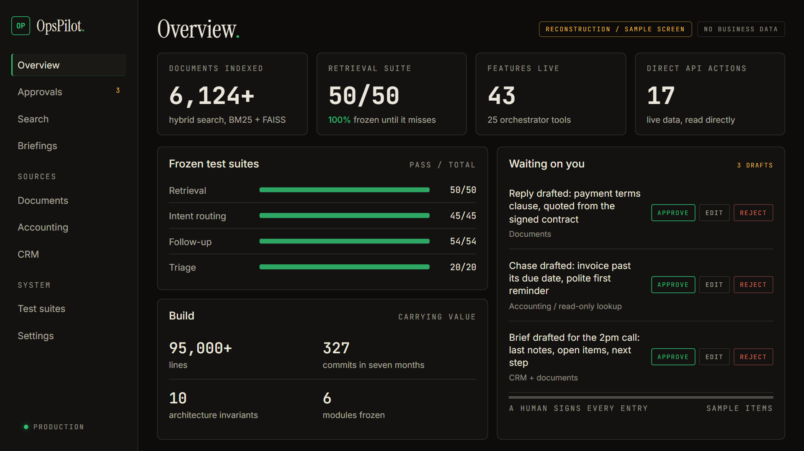
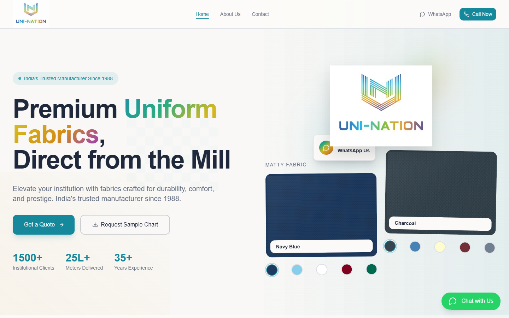
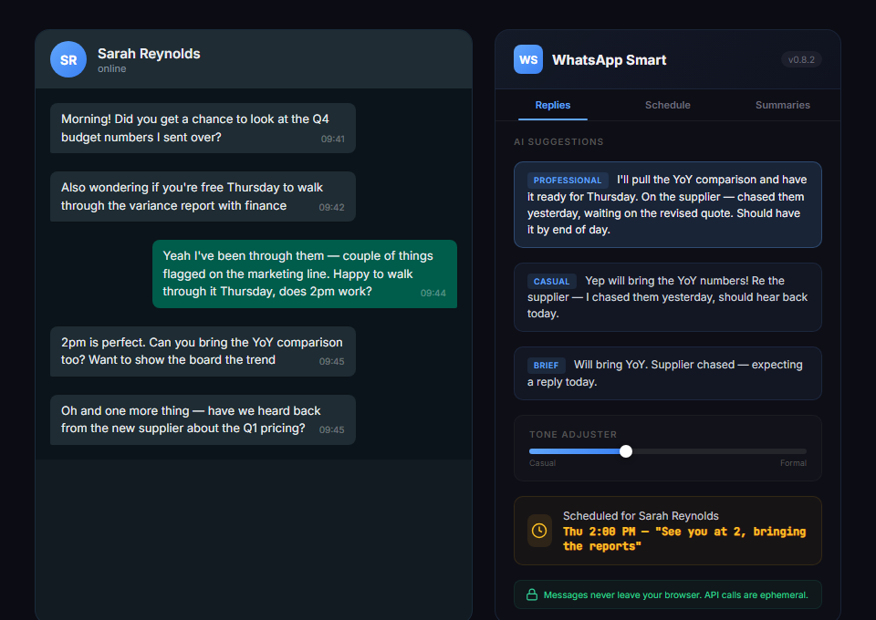

The story / Schedule 1 / Projects under management
The schedule.
Ten systems on one ledger. Five public ones I built on my own time, 160,000+ lines between them, and five built at work that the business runs on. Every status is as it really is, and every failure is written down.
| Ref | Asset | Description | Status | Carrying value |
|---|---|---|---|---|
| 01 | OpsPilot | Nobody could find anything in 6,124+ files. An AI that lives in Teams, searches them, pulls live finance data and drafts answers I approve with one click.  |
Production | 6,124+ docs answering back |
| 02 | Trading Bot | I kept overriding my own trading rules. Four AI agents now rate every setup and hold an absolute veto: 115+ sessions, zero impulsive trades let through. |
Paper trading | 0 bad trades |
| 03 | Uni-Nation Digital | Warehouse staff hold fabric rolls in both hands, so stock entry had to work by voice. Website, inventory PWA and Hindi voice entry for the family fabric business, running since 1988.  |
Being repaired | ~$2m tracked |
| 04 | WhatsApp Smart | I wanted to schedule a birthday message and WhatsApp couldn't. A Chrome extension for scheduling, AI replies and summaries. Never launched, and honest about it.  |
Prototype | 11 features, never launched |
| 05 | SCS Cockpit | The exam fails people for generic theory and missed facts. The study engine I built for my own CIMA Strategic Case Study: timed drills, spaced repetition, zero dependencies. I passed. | Retired, job done | Passed. ACMA CGMA |
| Total: five public systems. Five more built at work, listed below | All in production use, or honest about not being | |||
The failures are on the books too: every entry carries a What went wrong note, told straight.
The failures are on the books too: every public entry carries a What went wrong note, told straight.
The day job runs on software I built for it. These belong to Krank, so every screen uses dummy data, and the figures are build facts, not business ones.
| Ref | Tool | What it does | Status | Build fact |
|---|---|---|---|---|
| K.1 | Expense app | Card spend sat unjustified for weeks. I built a full expense system: receipt reading, two-stage approval, card sync. | In daily use | 52 features / 41 days |
| K.2 | Proposal builder | Sales pasted prices from a spreadsheet into a paid template tool. I built a calculator that works out tiered pricing and generates branded proposals. | In daily use | 533 tests |
| K.3 | Ask-the-data bot | Non-technical staff queued behind engineers for database answers. A Teams bot now writes SQL from plain English, runs it read-only and screens results for personal data. | Live | 0 credentials held |
| K.4 | Ops Monitor | Contract deadlines were invisible until they renewed themselves. A register with 90/60/30/7-day alerts, plus an ops dashboard. | In daily use | 9 systems, 1 dashboard |
| K.5 | Contract generator | Order forms were hand-edited and signers could alter commercial terms. Teams form to signed document, pricing locked into the text, two approvals before the customer sees it. | Live | 2 doc types / 8 days |
| Five tools built at Krank, in use inside the business | Dummy data on every screen | |||
K.1, K.2, K.5: real screens, test accounts and invented customers. K.3, K.4: reconstructions of the real tools, sample data. Open any frame to enlarge it.
Happy to walk through how any of these were built. Email me, or find me on LinkedIn.